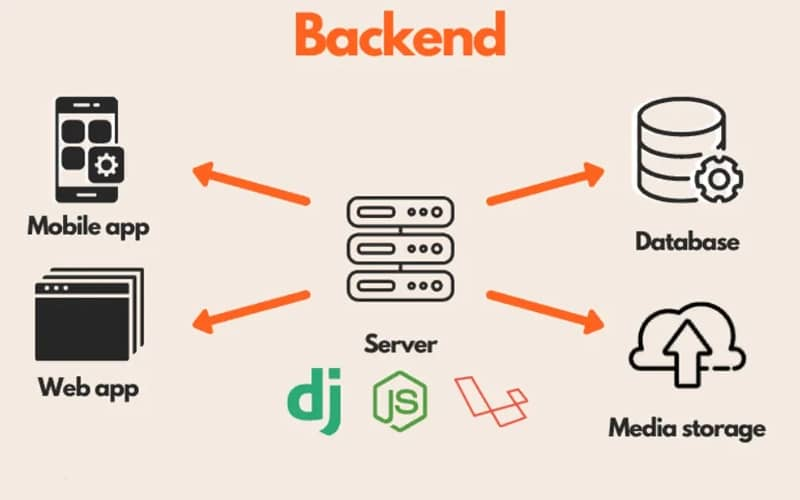

Le backend (ou arrière-plan) désigne la structure invisible d'un site web ou d'une application informatique. Contrairement au frontend avec lequel l'utilisateur interagit directement, le backend gère toute la logique métier, le traitement des données et la communication avec la base de données
